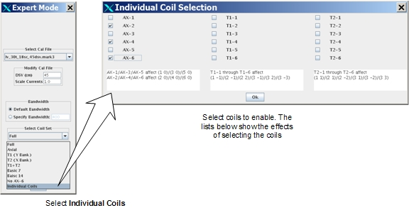
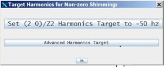
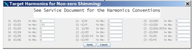
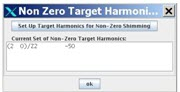
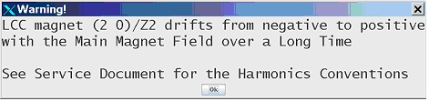

GE Exclusive Use Only
Direction 5440000, Rev# 5
Signa HDxt Service Methods
Module Version 6.0, Version Date 9/10/10
GE Exclusive Use Only |
The Expert Mode of LVShim allows you to use several features that are normally not necessary to use during magnet shimming. These features are designed for experienced users. The Expert Mode options are:
Cal file
Scale currents (Example: Selecting 0.5 will insert half of the calculated current.)
Bandwidth
Coil set (Axial, Transverse 1, or other specific coil sets are available.)
No AX-6 Coil (shimming without AX-6 coil)
Individual Coil Selection
Select the shim type (gradshim/supercon rough/supercon fine/test) before you click expert mode, because contents of the expert mode depend on the shim type. See Illustration 1.
Illustration 1: Expert Mode

To access Expert mode, select More Actions in the upper left section of the LVShim GUI, and Expert Mode.
LVShim supports “No AX-6 Coil”, which includes all coils in the correction currents calculation except the AX-6 coil. By default, the LVShim tool uses all correction coils, but you may select a subset of them.
Use the No AX-6 Coil feature when the Z6 harmonics value is in specification, but z2 and z4 are not in specification.
If the AX-6 coil is used in further iterations, the z6 harmonics may be out of specification again. Meanwhile, there is no guarantee that z6 harmonic will still be in specification after shimming is completed on the other coils (AX-2/AX-4) due to z2/z4/z6 harmonics interactions during the process.
LVShim supports individual coil selection, which allow you to select any combination of the available coils (rather than packaged coil selections, such as full, axial, T1, T2, and so on).
Individual coil selection is not recommended for normal use. However, it may be useful in very special situations:
You may encounter a magnet where a few of the supercon shimming coils are dead, but the magnet may be shimmed using passive shimming.
In the case of WB magnets (18 coils 3T) where the z1/z3/z5 harmonics are already in specification but the z2/z4/z6 harmonics are not in specification, you may choose to use only the ax2/ax4/ax6 coils to calculate the correction currents. See illustration below.
Illustration 2: Individual Coil Selection Screens

You can specify one or more harmonics to be shimmed to a non-zero value (+/- some variation). For example, a small percentage of LCC magnets exhibit drift of (2, 0) harmonics (also known as z2 harmonics) along with the main magnetic field over time (drift time varies from 6 months to a year). This results in a field engineer being on site every year. To decrease the number of site visits, the magnet z2 value can be shimmed to the value opposite of the value to which the magnet will eventually drift. (For magnets other than LCC, harmonics barely drift).
Over a long time period (months), a small percentage of LCC magnets exhibit (2, 0)/z2 harmonics drift from a negative value to a positive value along with the drift of the main magnetic field.
There are many factors which can change the values of harmonics, such as the position of the phantom on the table and where the phantom is landmarked, magnet He pressure change, the introduction of ferromagnetic material near the magnet room, a low system signal/noise ratio, and so on. Before applying the non-zero harmonics target technique, you need to know the “history” of the magnet to know how the magnet’s harmonics, especially (2, 0)/z2, undergoes drift. Since you are dialing the final harmonics near the customer acceptance limit, it is possible the non-zero targeted harmonics might be out of specification the next time you measure it because of factors that can change the values of harmonics.
To specify non-zero harmonics, follow these steps:
This window appears for LCC magnets only, for non-zero harmonics shimming. It is recommended to use the option set of: [Set (2 0)/Z2 Harmonics target to -50hz]. See Illustration 3.
Illustration 3: Target Harmonics for Non-zero Shimming Window

Illustration 4 displays the window that appears on non-LCC magnets as well as under the [Advanced Harmonics Target] for LCC manets. Enter target harmonics, then click apply.
Illustration 4: Advanced Harmonics Target

A confirmation alert box opens. See Illustration 5. Click [OK] to confirm the target harmonics.
Illustration 5: Non-Zero Harmonics Confirmation Alert Box

There is a change to the LVShim harmonics convention from pre-MR750/HDxt (using the command line based LVShim tool) to MR750/HDxt (20.0/15.0 or later, including 20.0/15.0, Graphical User interface based LVShim tool).
The new LVShim tool no longer swaps x/y related harmonics and no longer changes the sign of certain harmonics. This is to be consistent with gradient shim, high order shim and MR image in general.
When the old LVshim tool calculates correction currents internally, it always uses the "unswapped/sign_unchanged" harmonics convention, but when it displays those harmonics to the users, it changes convention. The new tool displays the harmonics without changing convention.
The old tool:
Changed harmonics signs for (2, 0), (4, 0), (6, 0), (1, 1), (1, –1), (2, –2), (3, 1), (3, –1), (3, 2).
Swapped harmonics (1, 1)/(1, –1), (2, 1)/(2, –1), (3, 1)/(3, –1), (3, 3)/ (3, –3).
Harmonics Notations Example:
| (1 0)/z(or z1) | (1 1)/x | (1 –1)/y |
| (2 0)/z2 | (2 1)/zx | (2 –1)/zy |
| (3 0)/z3 | (2 2)/x2-y2 | (2 –2)/xy |
| (4 0)/z4 | (3 1)/z2x | (3 –1)/z2y |
| (5 0)/z5 | (3 2)/zx2-zy2 | (3 –2)/zxy |
| (6 0)/z6 | (3 3)/x3 | (3, -3)/y3 |
| NOTE: | Sign changes and swap currents shown in bold. |
Example: Same measurement with old/new harmonics conventions
Old convention:
| ( 1, 0): | -9.47 [ 35] | ( 1, 1): | -2.55 [ 35] | ( 3, 1): | -5.64 [ 50] |
| ( 2, 0): | 64.53 [ 60] | ( 1,-1): | -4.68 [ 35] | ( 3,-1): | 8.13 [ 50] |
| ( 3, 0): | 19.14 [ 50] | ( 2, 1): | -6.56 [ 50] | ( 3, 2): | -0.07 [ 50] |
| (4, 0): | -23.50 [100] | ( 2,-1): | -3.97 [ 50] | ( 3,-2): | -2.77 [ 50] |
| ( 5, 0): | 12.01 [100] | ( 2, 2): | -2.77 [ 50] | ( 3, 3): | -15.17 [ 50] |
| (6, 0): | -92.64 [100] | ( 2,-2): | 6.14 [ 50] | ( 3,-3): | -6.58 [ 50] |
New convention, these will be on the UI:
| ( 1, 0): | -9.47 [ 35] | ( 1, 1): | 4.68 [ 35] | ( 3, 1): | -8.13 [ 50] |
| ( 2, 0): | -64.53 [ 60] | ( 1,-1): | 2.55 [ 35] | ( 3,-1): | 5.64 [ 50] |
| ( 3, 0): | 19.14 [ 50] | ( 2, 1): | -3.97 [ 50] | ( 3, 2): | 0.07 [ 50] |
| (4, 0): | 23.50 [100] | ( 2,-1): | -6.56 [ 50] | ( 3,-2): | -2.77 [ 50] |
| ( 5, 0): | 12.01 [100] | ( 2, 2): | -2.77 [ 50] | ( 3, 3): | -6.58 [ 50] |
| (6, 0): | 92.64 [100] | ( 2,-2): | -6.14 [ 50] | ( 3,-3): | -15.17 [ 50] |
The harmonics convention change is largely transparent. However, you need to be aware of the following situations:
According to the old convention, if you are doing non-zero (2, 0)/z2 harmonics for LCC magnet, you set up a positive target value (for example, +50 hz) and let it drift downwards after shimming. With the new convention, (2, 0)/z2 harmonics should be set to a negative target value (for example, -50 hz), and allowed to drift upward.
For those who want to use the non-zero shimming feature, the new tool has a suggested target value (-50 hz) for LCC (2, 0)/z2. The software displays a warning when a positive target value is set for (2, 0)/z2 of LCC magnets because a small percent of LCC (2, 0)/z2 harmonics drift from negative to positive (as shown with the new convention) along with the main magnetic field over a long time (for most LCC magnets, (2, 0)/z2 and other harmonics do not drift).
Illustration 6: System Warning Message

The Transverse 1 (T1) bank of the supercon power supply now affects the “y bank” of harmonics, that is, (1, –1), (2, -1), (3, -1), (3, -3) and (2, 2), (3, 2).
The Transverse 2 (T2) bank of the supercon power supply now affects the “x bank” of harmonics, that is, (1, 1), (2, 1), (3, 1), (3, 3) and (2, -2), (3, -2).